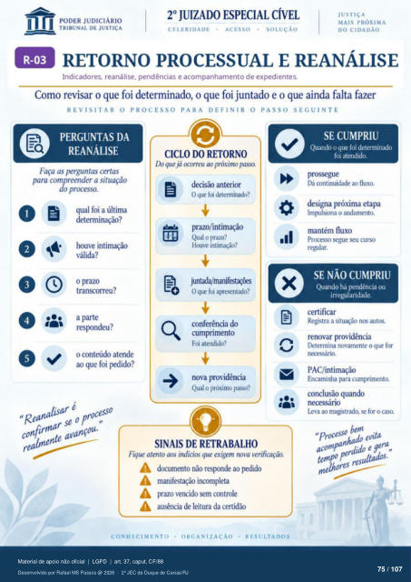

Transcrição automática em português, ainda não revisada. Confira grafia, prazos e termos jurídicos na imagem e no PDF antes de utilizar.
oo
RETORNO PROCESSUAL E REANÁLISE
Indicadores, reanálise, pendências e acompanhamento de expedientes. Como revisar o que foi determinado, o que foi juntado e o que ainda falta fa7Rr
REVISITAR O PROCESSO PARA DEFINIR O PASSO SEGUINTE
PERGUNTAS DA
REANÁLISE
Faça as prguntas certas para comrreender a situação
o processo. qual foi a última
determinação? houve
válida? o prazo
transcxrreu? O aparte
respondeu? o conteúdo atende
ao que foi "ReanalcsUse 0
confirmar avançou.
CICLO DO RETORNO
Do quejá ocorreu ao próximo passo. declsaoantenor
O qtr foi determinado? prazo/intimação
Qual o prazo? Houve intimação?
O foi apresentado? conferência do
cumprimento atendido?
nova providência Qual o próximo passo?
SINAIS DE RETRABALHO
x
SE CUMPRIU
Quando o que foi determinado foi atendido.
prossegue Dá mntinuidade ao fluxo.
designa próxima etapa Impulsiona o andamento.
mantém fluxo Prcxzsso segue curso
SE NÃO CUMPRIU
Quando há pendência ou irregularidade.
Registra a situA•ão aut(K renovar providência
Iktermina novamente o que for PAC/intimação
Encaminha para cumprimenta conclusão quando
Leva ao magistrado, se for o caso. " processo
aco Fique atento aos indicias que exigem nova verificaçâa
dcrumento não responde Fdido A manifestação incompleta
A prazo vencido sem cmtrole ausência de leitura da Qrtidão
CONHECIMENTO • ORGANIZAÇÃO RESULTADOS
evita res
Ver também o infográfico original (página 75)
